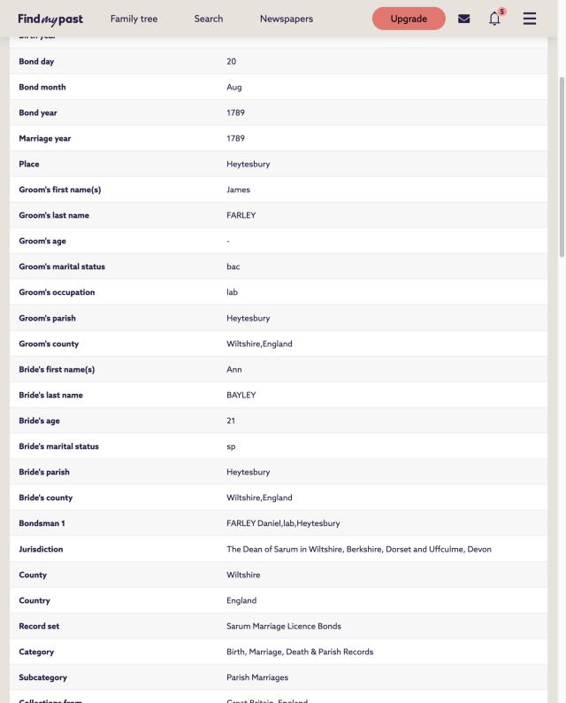
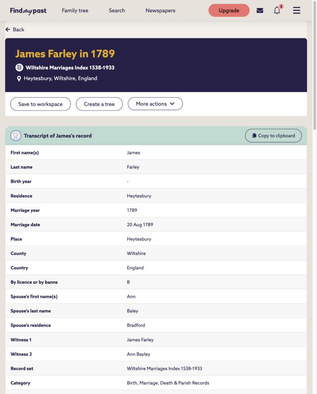
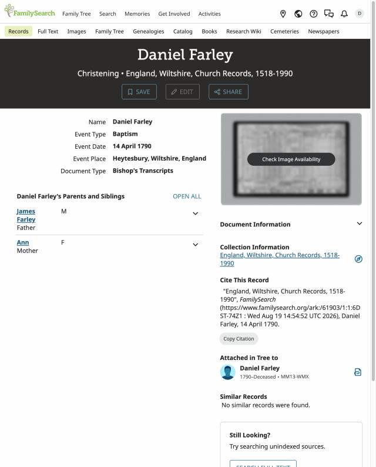
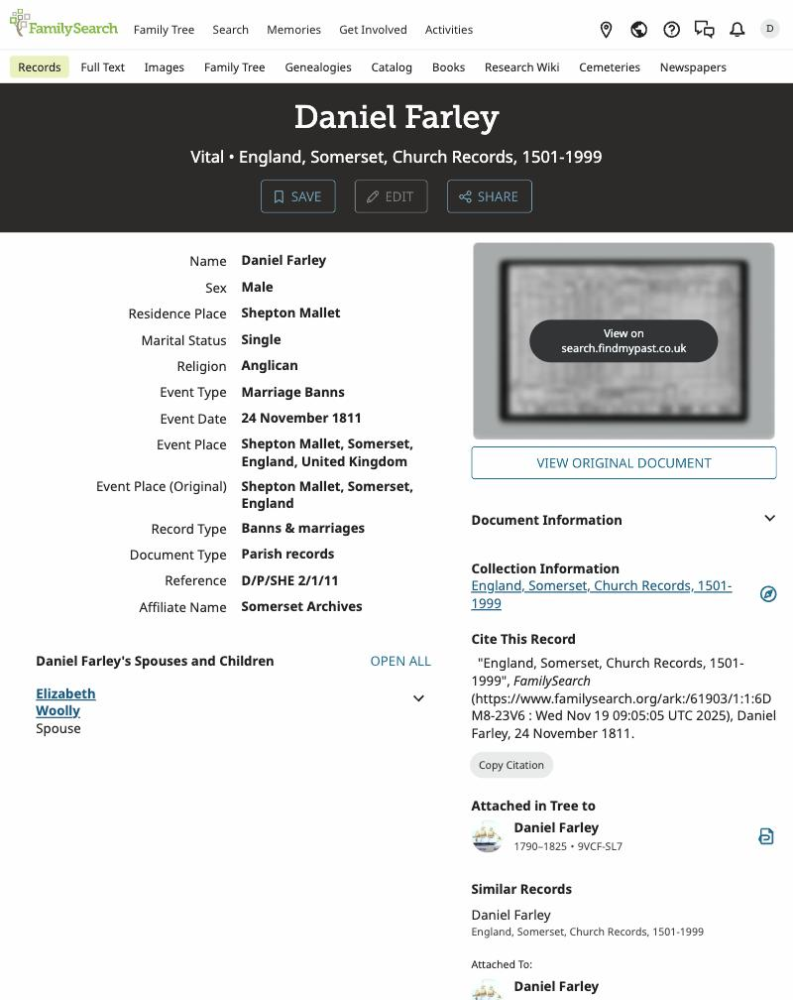
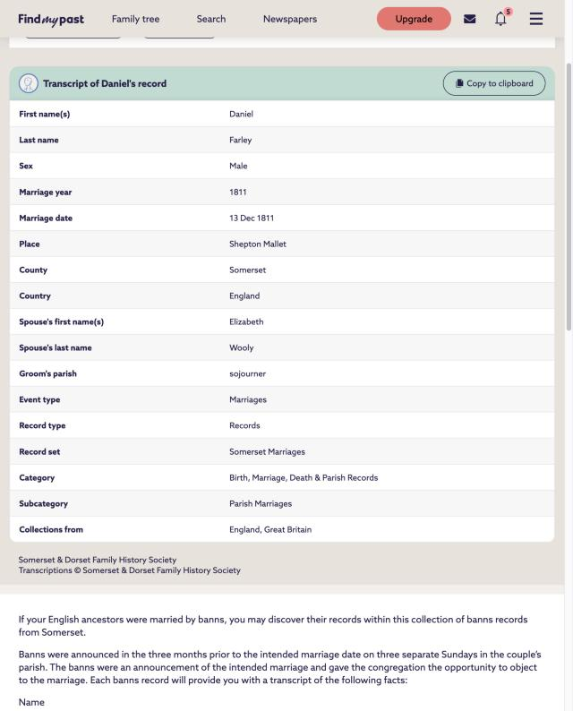
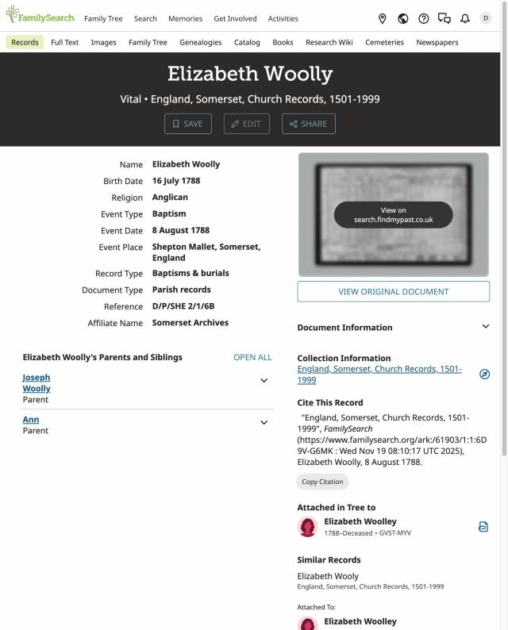
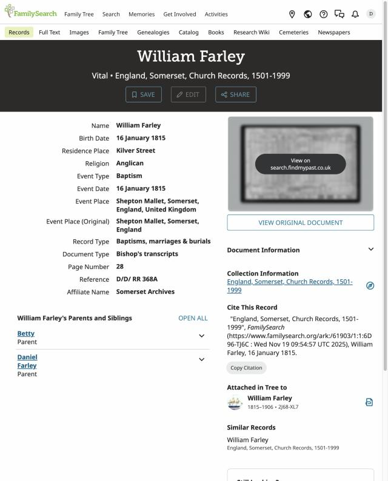
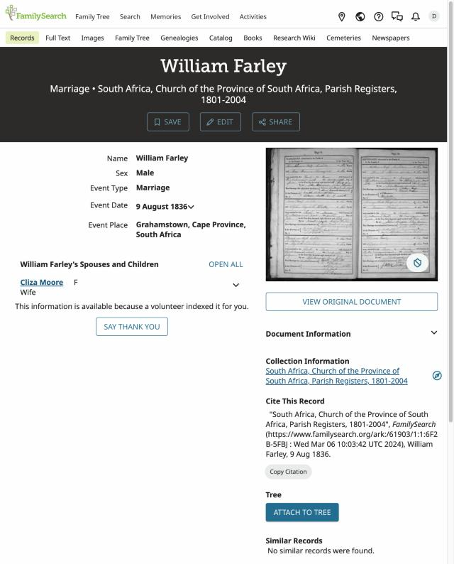
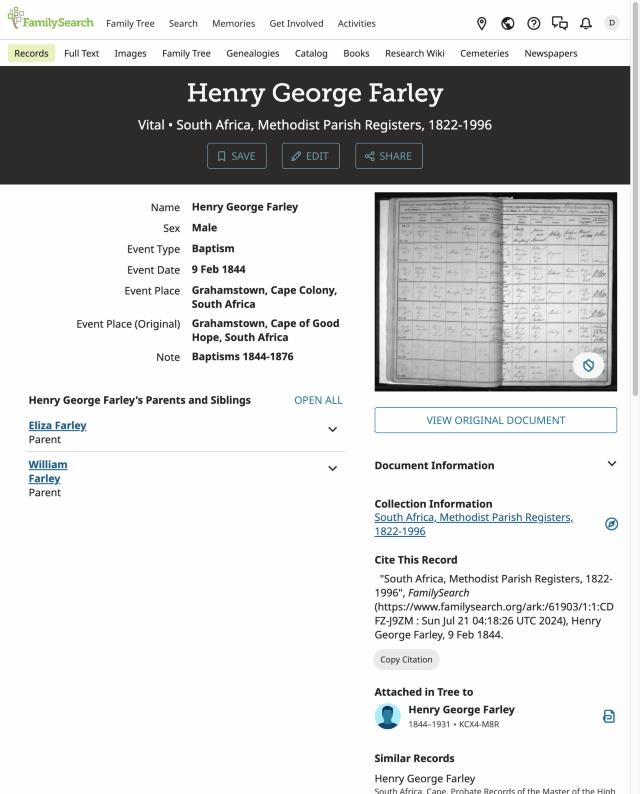
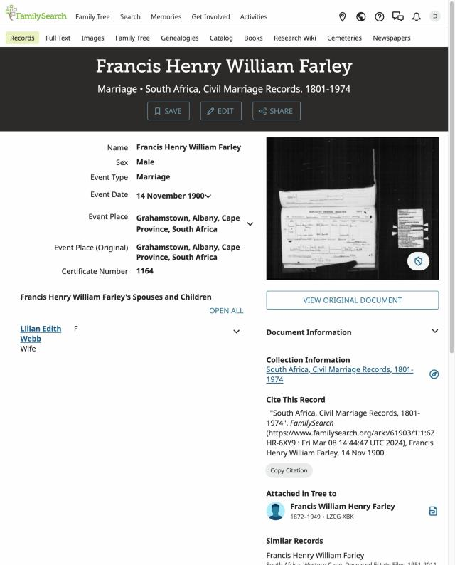

Daniel Farley, Royal Marine and 1820 Settler
Started from Brett Farley’s family tree (a MyHeritage GEDCOM). The tree’s farthest Farley, Daniel, had no parents and a vague birthplace (“Devon or Somerset”). A first session of register searching on 2 November 2026 put him in Heytesbury, Wiltshire, and corrected two of the tree’s facts. This page is a running account: what is read, what is probable, what is still open.
The descent from the requester is, through people long dead: Daniel Farley (c.1790–c.1825) → William Farley (1815–1906) → Henry George Farley (1844–1931) → Francis William Henry Farley (1872–1949) → Lionel Llewellyn Farley (1903–1966) → the living generations. Nobody living is described on this page.
The request
| Asked by | David Defranceski, for Brett Farley (born Durban, 1978) |
|---|---|
| Start point | A GEDCOM export of 1,743 KB, 2,009 people, from MyHeritage (source trees: Ancestry Family Trees and MyHeritage Smart Matches). The Farley line is its best-documented branch back to 1820. |
| Wanted | Research the Farley family, beginning with Brett, and build a one-page site. The oldest unresolved question in the tree is Daniel Farley’s origin, so that is where the work went. |
What the registers say that the tree does not
Each row names the tree’s version, the register’s version and how sure we are.
| William’s birthplace | Tree: “Devonshire”, born 17 Jan 1815. Register: baptised 16 January 1815 at Shepton Mallet, Somerset, parents Daniel and Betty Farley, residence Kilver Street (Somerset church records, Bishop’s Transcript, D/D/ RR 368A, p. 28). A baptism on the 16th cannot follow a birth on the 17th, so the tree’s day is also wrong or mis-copied. Read in the index; the page image is not yet seen. |
|---|---|
| Daniel’s origin | (Update: the parents’ marriage has since been read; see “The wall”.) Tree: born about 1792, “Devon or Somerset”. The settlers’ index says Devon. A Daniel Farley was baptised 14 April 1790 at Heytesbury, Wiltshire, son of James and Ann (Wiltshire church records). The eGGSA 1820 Settlers page on Daniel names that baptism and says a letter of 30 August 1819 (T. Bunn) describes him as from Heytesbury. Probable, not proven: it rests on a secondary page and on the name; I have not seen Bunn’s letter. |
| Elizabeth’s origin | Tree: Elizabeth Woolley, born 1791 at North Bradley, Wiltshire (or “Huntley, Gloucester”). Register: an Elizabeth Woolly was baptised 8 August 1788 at Shepton Mallet, born 16 July 1788, daughter of Joseph and Ann (record 1, record 2). She is the only Elizabeth Woolly of marrying age I found where the banns were read. Probable: nothing in the entry ties her to Daniel, but the banns, the children’s baptisms and the place all sit at Shepton Mallet. The tree’s North Bradley baptism (14 Aug 1791) has not been looked at and may be a different woman. |
| Marriage | Tree: 13 Dec 1811, Shepton Mallet. Banns: 24 November 1811, Daniel Farley, single, of Shepton Mallet, and Elizabeth Woolly (Somerset Archives D/P/SHE 2/1/11). The marriage itself is in the Somerset Marriages index: 13 December 1811, Shepton Mallet, Daniel Farley (“sojourner”) and Elizabeth Wooly (Findmypast record); the banns call him a bachelor of Shepton Mallet and her a spinster of Shepton Mallet (banns record). Findmypast sign-in needed. |
| Daniel’s service | Tree: “Naval pensioner from Wiltshire”. eGGSA, citing Admiralty records at Kew (ADM 27/12, ADM 22/305), says he was a private Royal Marine in HMS Foxhound (allotted 1 Aug 1810, discharged 6 Mar 1812 at Plymouth) and that a Greenwich Hospital pension was paid to him as a colonist at the Cape to 30 Sept 1822. Reported, not seen. |
Neither Heytesbury nor Elizabeth’s parents is yet a finding. A man of the same name was baptised in 1784 at Berry Pomeroy, Devon, to a different Daniel and Agnes; that is the likeliest source of the “Devon” in the settlers’ index and is set aside here because the 1819 letter, as reported, points to Heytesbury. The 1790 reading also leaves him about 29 at the 1820 sailing; the party return is said to give his age as 28, which is close enough for a clerk.
The spine
William is shown as read because both his baptism and his father’s name are in the entry, and the eGGSA children list agrees. Henry George and Francis are shown as read because a baptism or marriage entry names their parents or spouse; see the next section. Lionel’s link to Francis (born 1903) rests on the tree alone.
Snapshots of the key records
Each picture is a screenshot of the record’s own page as read on 2 November 2026, with the link to the original. They show the index transcription, not the register page itself; where FamilySearch shows a thumbnail of the register, it is in the picture.




















Down the generations, in South African records
Why there are no register images on this page: the Somerset and Wiltshire images are held by Findmypast and the County record offices, and FamilySearch sends the viewer there, so every record here is linked rather than copied. Index entries from FamilySearch (2 November 2026). Each links to its record page; a free sign-in is needed. The tree’s dates are compared against them.
| William & Eliza Moore | Married 9 August 1836, Grahamstown (Church of the Province of South Africa register; the wife is indexed “Cliza” Moore): record. Agrees with the tree. Her birth “in France” is still untested. |
|---|---|
| Henry George | Baptised 9 February 1844, Grahamstown, Methodist register, parents William and Eliza Farley (record). The tree’s birth on 1 January 1844 fits. He died 8 July 1931 in the Albany district (Cape civil death records, several indexes, e.g. record); probate 1931 Grahamstown. |
| His marriage | To Elizabeth Judith Whittal (indexed “Whitake”), South African civil marriage index, record. The tree gives 19 January 1872. Index only; date not read. |
| Francis William Henry | Born 31 October 1872, baptised 29 December 1872 at Bathurst, parents Henry George and Elizabeth (Church of the Province register; the index mislabels the place “Boshof, Orange Free State”). Married Lilian Edith Webb on 14 November 1900, Grahamstown, certificate 1164 (record). The tree says 12 November. Died 14 March 1949, Grahamstown (probate index). |
| William (the settler’s son) | Died 31 July 1906, Grahamstown, aged 91 (Cape civil record). The Methodist register index gives 2 August 1906 (probably the burial) and birth 1814 (record); the probate index says born 1815–16 “Devonshire”. That Devon is the family’s later belief; the 1815 Shepton Mallet baptism outweighs it. |
| Lionel Llewellyn | Died 2 October 1966, Westville, Durban (civil death index, record); married Valerie Mary Zimmerman (civil marriage index, record). The death index puts his birth at Grahamstown; the tree says Alicedale. |
The wall: James Farley of Heytesbury
Fourth pass, 2 November 2026: the Heytesbury Farley family before James. The parish has Farleys from the 1690s. Nathaniel Farley was buried there on 22 April 1734 (burial); children of a Nathaniel were baptised at Knook (Sarah, 1700) and Heytesbury (Joan 1708, Jane 1710, Daniel 31 January 1716, record). A second Daniel was baptised 1 November 1740 to Daniel and Mary, which fits a son of the 1716 Daniel. There are then three Daniel burials in the index: May 1781, 8 April 1790 and 7 December 1805 (1805, the man baptised 1740). So the Daniel who stood bondsman in August 1789 and was buried in April 1790 could be the elder man baptised 1716, which would make him old enough to be James’s father or grandfather, or a different Daniel altogether. That is a hypothesis, not a finding: no record names James as anyone’s son. The index lists no baptism of children to Daniel and Mary after 1740, and none for James under the surname spellings Farly, Farlie or Fairley in Wiltshire, 1750–72. A James Farley and Jane had Job baptised at Fittleton in 1789 and James in 1797, so there were at least two James Farleys on Salisbury Plain in the 1790s. Findmypast’s Wiltshire results are mostly register browse sets, with no new baptism.
Images not reachable (2 November 2026). The index record for Daniel’s burial on 8 April 1790 (record) gives no age and shows no register image behind the “Check Image Availability” link. Findmypast has the Heytesbury marriages (Phillimore) but no name-searchable baptisms or burials for the 1760s. So the burial ages and any baptism the index missed cannot be checked from these two sites. The route left is the register or bishop’s transcript itself at the Wiltshire and Swindon History Centre, or a Wiltshire parish-register site such as the Wiltshire OPC project.
Third pass, 2 November 2026. A second child of James and Ann was baptised at Heytesbury: William, 8 April 1792 (register index), two years after Daniel. The eGGSA page on Daniel (Sue Mackay, 2017) adds that both James and Ann made their mark on the licence, that the witnesses were John Ferris and Samuel Maynard, and that Ann is called “of the parish of Bradford”. A Royal Navy allotment of 1810 names Daniel’s mother Ann, so Ann was alive in 1810. The same page gives Elizabeth Woolly’s parents as Joseph Woolly and Ann Masters, married by banns at Pilton, Somerset, on 26 May 1779. Searched with no result: a James Farley baptised 1745–1775 in 28 Wiltshire parishes around Heytesbury, in the FamilySearch Wiltshire index; the same index does return James baptisms of 1797, 1802 and 1827, so it works, but it is an index and not the registers. One candidate for Ann: an Ann Bayly baptised at Chippenham on 28 September 1768, mother Jane (record); she fits the age (21 in 1789) but Chippenham is not Bradford, so she is not counted.
Second pass, 2 November 2026. There were two Daniel Farleys at Heytesbury: one baptised 1 Nov 1740 (parents Daniel and Mary, record) and buried 7 Dec 1805 (record), so he is not the Daniel buried 8 Apr 1790. A James Farley born about 1765 died at Haxton and was buried at Fittleton on 10 Dec 1840 (record); he is a candidate for the same man only if the 1804 Heytesbury burial is another James. No baptism for James has been found and no link to a father is established.
Daniel’s parents are now documented as a couple. James Farley, bachelor and labourer of Heytesbury, married Ann Bayley (also Baley), spinster, aged 21, on 20 August 1789 at Heytesbury, by licence. The licence bond gives her residence as Heytesbury; the parish index says “Bradford”. Three Findmypast records of this one marriage: the Sarum marriage licence bond, the Wiltshire Marriages Index (witnesses James Farley and Ann Bayley) and the Phillimore register (a Findmypast sign-in is needed). Daniel was baptised on 14 April 1790 and William on 8 April 1792 (William).
The bondsman was Daniel Farley, labourer, of Heytesbury. A Daniel Farley was buried at Heytesbury on 8 April 1790, six days before the baptism of James’s son Daniel. That is a likely father or brother of James, and the baby’s name suggests the man had just died; but no entry says so. Candidate, not proven. A Daniel Farley baptised at Heytesbury on 1 November 1740, son of Daniel and Mary, may be the same man (he would be 49) or a different one.
James’s own baptism has not been found in the Heytesbury index (1740–1775), and the FamilySearch tree gives him no dates or sources: both parent profiles were added on 3 October 2026 by one contributor.
| Other Heytesbury Farleys | Not counted, but nearby in time: Daniel (bapt. 1 Nov 1740, son of Daniel and Mary); William and Edith/Mary (children Thomas 1784, Diana 1790, Thomas 1795, Charlotte 1796); Richard and Ann (John 1790, Richard 1798). A Daniel Farley burial on 8 April 1790 sits six days before the 1790 baptism: likely the elder Daniel of 1740, but it should be looked at on the page. James Farley married a Betty Hinton at Heytesbury (date not read); that may be a different James or a second marriage. |
|---|---|
| Burial leads | James Farley, buried at Heytesbury in April 1804 (Find a Grave index entry, no age or parents): possibly Daniel’s father, who would be 39 if born c.1765; unverified. Ann Farley, buried 3 March 1832 at Horningsham aged 72 (register index) is probably not Ann Bayley, who was 21 in 1789 (born c.1768). |
| Another marriage | A Daniel Farley of Heytesbury married a Susanna Whatley (index entry; date not read). He could be James’s relative, or Daniel’s elder cousin. Not counted. |
| Unverified guess | A James Farley of Haxton, buried at Fittleton 10 Dec 1840 aged about 75 (b. c.1765), lies in the same river valley. Nothing ties him to Daniel; he is a name to test, not a candidate. |
James’s parents are unknown. The line stops at James until his baptism is found; the 1789 licence has now been read and names only the bondsman.
Other lines on the father’s side, first pass
| Whittal | Elizabeth Judith Whittal’s father Francis Whittal: a Francis Whittall was baptised 25 January 1798 at Lucton, Herefordshire (Bishop’s Transcript), matching the tree’s Lucton and father William Whittall (b. 1769 Lucton); the tree’s birth of 12 June 1798 comes after the baptism, so it is wrong or mis-copied. He married Ann Clayton in South Africa (church register) and a Francis Whittal, born about 1800, died 17 July 1873 (probate index). Probable; the link between the Lucton baptism and the settler is not yet read. |
|---|---|
| Webb | Charles Webb, born 1795–97 at Newbury, Berkshire, died 30 September 1868 at Grahamstown (probate index record); married Sarah Wills (church register); son Charles baptised 20 April 1834, Grahamstown Methodist (record). Agrees with the tree. His English baptism and parents (John Webb, Phoebe Hughes, per the tree) are unchecked. |
| Zimmerman | Herbert Andrew Zimmerman was baptised 16 March 1880 at Grahamstown (Methodist), parents Christian and Elizabeth Zimmerman (record); he died 29 October 1918 at Grahamstown (probate and civil index). The tree gives his birth as 20 December 1878; the indexes say 1879 or 1880. Christian’s Wiesbaden origin (tree: b. c.1854) was not found in an index search. Second pass: Christian John Zimmerman married Elizabeth Ann Carr on 2 October 1877 in South Africa (civil marriage index); a Christian John Zimmerman born 1854 in Germany died 27 September 1950 at Woodstock (probate index). That gives the Carr line a name and a date but not yet a place. A Christian Zimmermann baptised 16 June 1855 at Rennerod (Nassau) is a name-and-year match only and is not counted. |
| Cockcroft | The 1820 Settlers Index has a William Cockcroft with Charles Cockcroft, Harriet Bailey and Elizabeth Venables (record), and a Venables Cockcroft who died at Grahamstown on 26 September 1890 (record). An Elizabeth Venables was baptised 5 November 1809 at Newcastle-under-Lyme, daughter of Daniel and Jane (record), as the tree says. Probable. |
| Berry & Bowles | William Berry married Louisa Bowles in South Africa (church register, civil index). Their daughter Sarah Elizabeth Berry married John Thomas Jennings (civil index); the tree gives the Jennings line to Exning, Suffolk. Dates not read. |
| Moore | No match for an Elizabeth Ann Moore born about 1816 in an index search, and nothing for a death in January 1899 under Farley. The tree’s birth “in France” has no support here; this is a second brick wall. |
| Carr | Elizabeth Ann Carr married Christian John Zimmerman on 2 October 1877 in South Africa (civil marriage index). Her parents and birthplace are not yet found. |
Timeline
| 20 Aug 1789 | James Farley marries Ann Bayley, Heytesbury, by licence; bondsman Daniel Farley. Documented (index; Findmypast). |
|---|---|
| 14 Apr 1790 | Daniel Farley baptised, Heytesbury. Register index. Probable. |
| 1810–1812 | Private Royal Marine, HMS Foxhound. eGGSA citing ADM 27/12; not seen. |
| 24 Nov 1811 | Banns, Shepton Mallet. Register index. Documented. |
| 27 Dec 1813 | Elizabeth baptised, Shepton Mallet. eGGSA; not seen. |
| 16 Jan 1815 | William baptised, Shepton Mallet, Kilver Street. Register index. Documented. |
| 12 Oct 1816 | Sarah baptised, Shepton Mallet. eGGSA; not seen. |
| Lent 1819 | Fortnight’s imprisonment for larceny, Gloucester; residence given as Cox’s Hill, Frome. Tree, citing a criminal register; not seen. |
| 7 Jan–15 May 1820 | HMS Weymouth, Portsmouth to Algoa Bay, Hyman’s Party (leader Charles Hyman of Westbury, Wiltshire; a child named James Farley, probably Joseph, died on board 20 Feb). eGGSA and tree. |
| c.Sept 1825 | Daniel presumed lost in the schooner Bridekirk, Bathurst. Tree only; the eGGSA page on Daniel does not mention it. |
| 8 Dec 1827 | Elizabeth marries James Regan, Grahamstown. Tree only; a first index search found no entry. |
| 9 Aug 1836 | William Farley marries Eliza (“Cliza”) Moore, Grahamstown. Documented (index). |
| 9 Feb 1844 | Henry George baptised, Grahamstown Methodist. Documented (index). |
| 29 Dec 1872 | Francis William Henry baptised, Bathurst (born 31 Oct). Documented (index). |
| 14 Nov 1900 | Francis marries Lilian Edith Webb, Grahamstown. Documented (index); tree has 12 Nov. |
| 31 Jul 1906 | William Farley dies at Grahamstown, aged 91. Tree; the Grahamstown Journal obituary is not yet read. |
The mother’s side: Møller and Olsen of Sandefjord
Only people who died long ago are named here; the generation of Brett’s mother is left off the page. Norwegian church books are indexed on FamilySearch; every line below was read from an index record page, not from the church-book image.
| John Møller | Born 14 July 1905, baptised 9 November 1905 at Sandefjord; parents Johan Olsen and Marie Charlotte Olsen (church book). The tree has about 1907, so it is two years out. The index lists his mother as “Marie Carloth” with no reliable birth year; the marriage record below gives her as born 1864 in Bohuslän, Sweden. |
|---|---|
| Johan Olsen | Born 8 May 1868, baptised 19 July 1868 at Sandar (Sandefjord), parents Johan Christian Olsen and Olava Anette Møller (church book). Married 14 May 1894 at Sandefjord to Marie Charlotte, born about 1864 in Bohuslän; his father is named Johan Chr. Olsen and her father Chr. P. Olsen (marriage). The 1900 census at Sandefjord has Johan, Marie and daughters Agnes (1895), Margit (1897) and Gudrun (1899); Kolbjørn was baptised in 1901 (record). Probable: the baptism and the marriage agree on the father’s name and the town, but I have not seen the page that links the two. |
| Johan Christian Olsen | Born about 1817 at Sandefjord, son of Ole Hansen. Married 7 December 1854 at Sandar to Olava Annette Møller, aged 24, daughter of Hans Møller of Sandefjord (marriage). They had children baptised at Sandar, including Hans Oluf (1856) and Johan (1868) (Hans Oluf). |
| Where the name comes from | The Møller surname is Olava Annette’s family name, not a patronymic. John’s grandfather Johan Christian was an Olsen who kept the Olsen name, and John was entered as Møller at his baptism. Why the name passed down is not yet explained. |
Not established: Marie Charlotte’s own baptism (Bohuslän is in Sweden; the Swedish baptism index returned no safe match), the parents and origin of Hans Møller, and the Larsen line at Kristiansand. A search for an Esther Larsen born 1924–26 there returned no match, and the nearest hit (Esther Andrea, Vennesla 1919) is a different person.
What was searched, and the standard each answer rests on
All of this was read from FamilySearch record-search results and record pages (signed in by David), not from register images. Every result below is therefore an index answer, not a page-walk. A free sign-in is needed to open the links.
| Daniel + Elizabeth, marriage 1811 | Found: banns 24 Nov 1811 (two index records of one entry, principal and spouse). |
|---|---|
| William, born 1812–1818, father Daniel | Found: Shepton Mallet 16 Jan 1815. An undated “Devon, 1815” baptism for a William Farley also appears in the index with no parents, and has not been opened; it is the source of the tree’s Devonshire and is not shown to be him. |
| Daniel Farley born 1784–1796 | Candidates seen: Heytesbury 1790 (father James), Berry Pomeroy 1784 (father Daniel). Not counted: Horsham, Sussex 1799 (Daniel and Esther); Witham, Essex burial 1875 (born 1789). |
| Elizabeth Woolly born 1786–1793, father Joseph | Shepton Mallet 1788 (two index records). Near-names seen and not counted: Wholey (Wingfield, Derbyshire 1790), Woolley (Birmingham 1791, Elton 1792). |
| South African records | William’s marriage, Henry George’s baptism and marriage, Francis’s baptism and marriage, deaths of William, Henry George and Lionel: all found in the index (2 Nov 2026). A search for Elizabeth Moore (Farley) 1836 and Elizabeth Woolley/James Regan 1827 returned only unrelated people and counts as not established. |
| Heytesbury | Farley entries 1740–1830 listed from the index (baptisms, burials). The 1789 marriage was not found. |
| Findmypast | Heytesbury 1789 marriage (three records), Shepton Mallet marriage and banns 1811. A search for Daniel Farley in Gloucestershire in 1819 returned no result (the 1819 imprisonment is therefore still taken from the tree alone; no control search was run, so this is not a nil). |
| Secondary page | eGGSA 1820 Settlers, “FARLEY, Daniel — Extra Data”. Read through a summarising tool, not word for word, so quote it only after opening it. |
What would move this forward
- Open the three register images (Daniel’s Heytesbury baptism, Elizabeth’s Shepton Mallet baptism, the 1811 banns/marriage) and save them to this page. Needs the viewer, one image each.
- James’s baptism and the bondsman Daniel: Heytesbury and neighbouring parishes c.1755–1770; the 8 April 1790 burial and the 1740 baptism; the Daniel and Susanna Whatley marriage.
- Stage 2: the 1873 and 1906 probate files at the Cape archives (they name heirs and often birthplaces), the Moore marriage entry in full, and the English origins of the Cockcroft, Jennings, Berry, Bowles and Whittal lines.
- Daniel’s death. Search the Bathurst/Cape records (eGGSA, NAAIRS estate files) for 1825; test the Bridekirk story against shipping notices.
- Elizabeth’s mother’s name (“Betty” in William’s entry; Elizabeth in the banns) and the tree’s North Bradley baptism.
- William’s Grahamstown obituary, 1906 and his 9 Aug 1836 marriage to Elizabeth Ann Moore at St George’s. The tree gives her birth in “France” (about 1816) and two conflicting death places; nothing has been checked.
- Naval and Marines record at Kew (ADM 27/12, ADM 22/305) to confirm service and an age.
A note on names and places
| Surname | Farley; also Farly (indexed on the banns). Wife: Woolly (banns, baptism), Wooly, Woolley (tree). |
|---|---|
| Given names | Elizabeth appears as Betty in William’s baptism. |
| Places | Shepton Mallet (Somerset); Heytesbury (Wiltshire); Bathurst (Eastern Cape); Grahamstown (now Makhanda). Country on the record: England, then the Cape Colony (British), not South Africa. |
What this page is, and is not
A working account of one line, built from a family-tree file and a first round of index searches. Where the tree and a register disagree, the register is preferred and the tree’s version is said so. Index entries are transcriptions, and a page is only as good as the image behind it. No living person is named other than the requester.